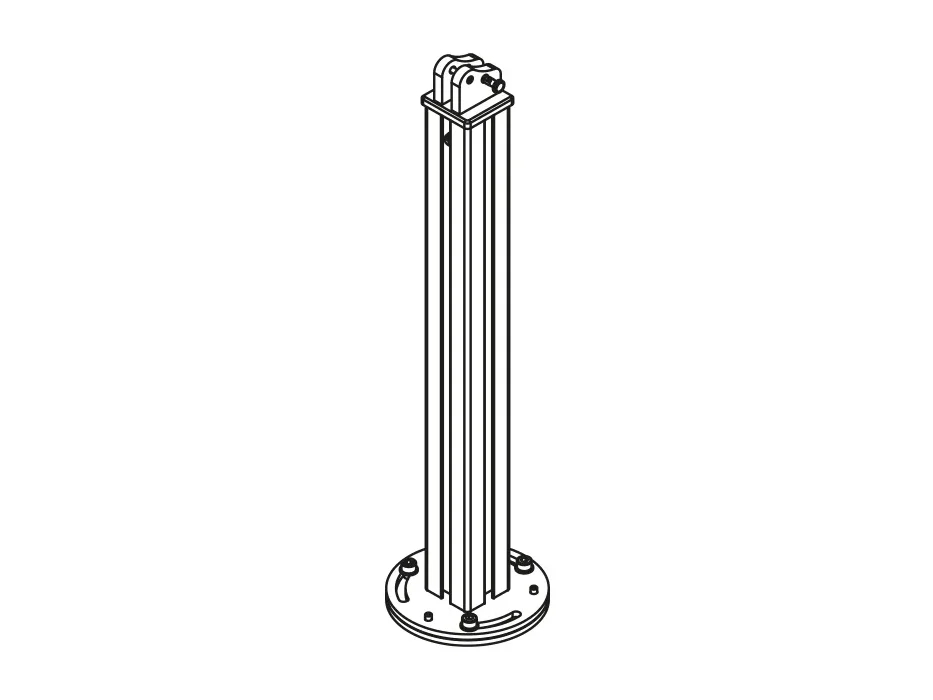

Izvedba 1 · stup na tvrdoj podlozi
Prednja šipka s ručkom prihvaća se na stup koji se podnožnom pločom pričvršćuje na čvrstu podlogu, na primjer betonsku ploču ili popločenje. Prikladno za terase i balkone s tvrdim podom.
- PrihvatStup s podnožnom pločom
- PodlogaBeton, popločenje
- KasetaNa zid